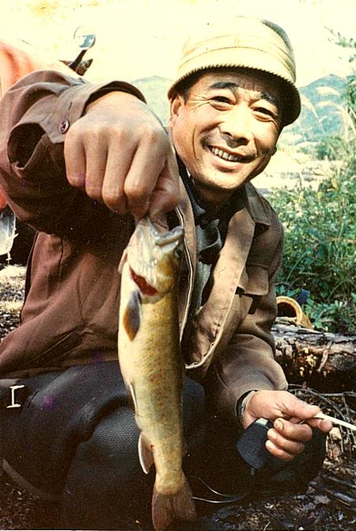

父の釣り口伝
アメノウオ一代 その２１ 開田村を訪れた頃
－－開田へ最初行った頃の話を聞かせて。
開田へ最初行ったのは、憲（肇の長男）が名鉄へ入った年だから、18で高校卒業したとして今憲が39歳だから今、21年ぐらい前だわなあ。で、憲が寮から家に帰ってきて言っただい。
「父ちゃん、今度開田っていう所へ行かめえか（行こうじゃないか）」
で憲がさ、車欲しくて欲しくてしょんねえところが俺は銭やらんちゅうわけだ。お前が自分で稼いで、買えるだけの貯金をしよと。月賦で買っちゃあいかんと。それでもうひとつ、それ以外に、任意保険に入るだけの余裕が出来たら買えと。そうでなきゃ買っちゃあいかんと。そうしたらまあお金ができて買ったちゅうもんで、例の赤いシビックだ。それで開田へ行かめえかっちゅうもんで、
「そんな所へ行ってどうするだ？」
って聞くと、
「アメノウオがぎょうさんおる、ちゅうことだ」
「だれにそんなこと聞いただ？」
「開田村の出身の人が名鉄へ来ておって、その人に聞いただ」
「ほーう！」
ちゅうわけだ。ほいで行って、あそこに御嵩旅館とか嶽見旅館とかあるら、そこへ泊まって釣るちゅうことにして。
それでさあ、ええ時間に目が開いてみたら雨降っておるだい。ちょっと、こりゃ合羽着にゃあいかんぐらい雨ふっとる。それから起きて、早く朝飯を食わせてくれって宿の人に言っておいたもんで、朝飯食べてたらその宿の女中さんがよう、
「あんたらほんとにその魚釣りに行くだか？」
って聞くもんで、
「行くだわいなぁ、いまご飯を食わしてもらっただもんだい、行かんじゃい」
って言うと、止せって言うわけよ。どうしてって聞いたら、
「素人に釣れる魚じゃねぇ」（笑）
とこう言うわけよ。
「そりゃみんなここら辺の人が釣ってるけど釣れりゃあへん」
「ほーう。釣れんかね？」
「釣れん」
「それだって、アメノウオがおるっていうじゃねえか」
「おる」
「おるなら釣るよ」
それから
「女中さん、すまんがよう冷凍庫で氷をできるだけ作っておいてくれ」
って言うと
「まあそんなに釣れもせんに」
「いいよ、作っておいておくれ」
っていうわけだ。
それから釣りに行ったら川の奥の方で雨が降ったらしくてよう、いくらか濁ってくりゃがってさ、平水の状態から二十センチぐらい水が増えりゃがって。や釣れるの釣れんのってほんとバカ釣れに釣れてさ。
あの嶽見屋旅館の前をほんに五百メートルぐらい行ったりまた戻ってきたりするだけであれよあれよっちゅううちに大釣りしてさ、それからええかげんに魚の腹割いて戻ってきてさ、
「ほい、女中さん、氷作ったるかね？」
って聞いたら
「作っちゃああるが、なんだね？」
と言うからこれを冷やしておいてくれって言ったら釣れた？って聞くから、釣れたよって言ってバケツに魚をあけてやったらたまげちゃって（びっくりして）さ。
「どうしたこんだ！」
っちゅうわけだ。（笑）
それから俺また行って来るでって言ってよう、続きをそれでも３時頃まで釣っただかなあ、憲も大きなやつをルアーで何尾か釣ってきて、それからこんな固まりの氷をもらってクーラーに入れてよう、あーぁ釣れたよ。あの当時は。

しかし、一説によると、この写真は長男の憲が
釣ってきた岩魚を借りて撮したとか....。
それからというもの行くの行かんのじゃないわなぁ。（笑）
－－俺も、なにしろ夜出て国道19号をひた走って行った覚えがあるなあ。
そうだよ、この家を12時頃出て、向こうに明け方の４時半頃着いただよ。もう宿賃をケチるという寸法だもんで。（笑）
それで途中のラーメン屋でラーメン喰ったりして。
－－よう行ったなあ。
行った行ったぁ。剛の手ぬぐい拾ったり、洋が熊に出会って逃げてきたのに出会ったり。（注：ある日曜日に開田村の冷川を訪れた肇は、その先週に私が釣行した際に忘れた手ぬぐいを拾った。そしてその日の午後別の沢で熊に出くわしてあわてて逃げてきた洋（私の兄）と出会ったことがあった。）
－－あの嶽見旅館の前じゃあ岩魚は出なかったかん？
出た出た。うん。そんなに大きかないけどなあ。それでも25センチぐらいまではよう出たよ。あの宿の裏にけちな（変な）沢があるじゃねえか、あれにアメがおっただぜ。俺がどうもおりそうなもんだと思ってよう、憲にさ、
「やい、まあいっぺん俺行って来るでなあ」
ちゅうわけだ。ある日のことだよそれは。あの時はもう日の出旅館が民宿を始めとった時だでなあ。憲が
「どこへ行くだい」
って聞くもんで
「裏の沢へ行く」
「こんな小さな沢におるかい！」
「いや俺はおると思う」
っていうわけでよう、しばらく上がっていったら落差工が作ってあってなあ、40センチぐらいの。で、その下がちょっとした淵になっておってなあ、そこまで行ったら日が暮れかけてまあこりゃしょんないちょっとやったれと思って、はいそこまでいくうちに10尾ばかし釣ってはおったけど。
その場所に座り込んでさ、そしたらおるじゃねえか、おまえが言うライズとかいうのでピューピュー飛んでおるだもんで。エサ入れればククーッと引く。ほいたらよう、憲のやろうが俺が日が暮れても来んもんだい心配して見に来ただなあ、憲が俺の後ろに立っておりゃがって、俺知らんもんだい、
「やい、親父はほんとに目が悪いなあ」
おらびっくりこいて
「なんだぁ、おまえか」
「さっきから見とるけど親父は目印なんか動いたって動かんだって竿上げりゃあへんじゃないか！だけどそれでも釣れるなあ」
なんて言って。ほんとあの時分には釣れたな。うん。高夫さん連れて行った時だって（注：佐々木高夫氏、伊藤家のとなり、屋号そらの主人、コイ釣りの名手）高夫さんでさえ10だか11尾釣っただもんで。
－－ふーん、そらのおじさんも一緒に行ったことあったの。
うん、俺もやってみたいって言うもんでよう、そいじゃあ行くかってわけで。それでさっき行った小さい沢へ釣れてっただい。ここなら高夫さん川へ入らんでも田んぼからこうやって竿出せばいいから、とにかくそーっと行ってやってごらんなさいっていうわけで。俺後からついて行ってよう、おじさんそれだけ釣っただもんで。こんな浅い20センチぐらいの深さの所におったぞ、沢のちょろちょろーっとした所に。
そん時だわい、おれが西野川の奥へ上っていって旅館から１キロぐらい上がったところで釣っておったら、
「おーい！」
なんて呼ぶもんだい、
「あーん？」
なんて見たら橋の上によう、いい年をしたおじさんが立っておって、今から考えると64、５のおじいさんだったけど、
「なにか用だかね？」
って言ったら、
「おめえ、どっから来ただ？」
「どっから来たって、わしは入漁券は買っておるよ」
「切符や何かおれは漁協じゃないで買っても買わなくてもかまったこたぁないけど、見たことねえ顔だで」
「わしは愛知県から来たよ」
そう言ったら
「なにをー？ほんとにか」
なんて言って。
「そうだよう、せがれと二人で魚釣りに来た」
「物好きなやろうだなぁ！ おめえは」
そう言ってその人もさあ橋の欄干に腰掛けちゃって、
「釣れたか？」
なんて聞くから
「釣ったよ！」
「おれも愛知県は知っとるがなあ、愛知県のどこだぁ？」
「山ん中だ」
「山ってどっちの山だ？」
「北設楽郡だ」
「おう、よう知っとる、北設楽郡知っとるぞ」
って言う。
「わしゃあ、北設楽郡の東栄町っていう所だ」
「おお、東栄町か！おら泊まっておったでよう知っとるぞ」
そうしてしゃべってみたらよう、俺ん家で弁当喰ったっていうでいかんわなあ。だんだんしゃべっておったら、
「なんだあの道ばたの家か？」
「そうだよ」
「おう、あそこのなあ嫁さんやおばあさんに世話になって弁当喰わしてもらったよ」
「そりゃ俺のかかあだ」（笑）
「ほうーう！」
「おじさんいったいあそこへ何しに行っただん？」
って聞いたらここの送電線の鉄塔の仕事に雇われて来てよう、東栄町じゅう、鉄塔立つうちずーと林家旅館に泊まって仕事しとったんだって。おじさんが
「柿野を知っとるぞ」
って言うもんでだんだん聞いていったら
「おうおう、高いところをなあ、ずーと歩いたで」
って言って。そしたらそのおじいさん、人には親切にしとくもんだ、
「ちょっと来い、ちょっと来い」
ちゅうわけだ。
「なんだね？」
って聞くと、
「おれがアメノウオのなあ、とっておきの川を教えてやる！」
っていうわけだ。ちょっと釣りにくいけど魚はおるっていうわけで。どうして釣りにくいだって聞いたら、川が小さいって言う。そんなのこっちのおとくいだもんで。（笑）
「ついて来い！」
って言うもんでしばらく後ついて歩いたらほんになあ、幅1.5メートルぐらいの沢がよう、わりあい水のある沢が川岸から出とるだ。
「この沢だ」
って言うら、
「ほーう」
「とにかくこの沢沿いに上っていけ、釣れるはずだ」
って言うもんで釣り上がったら釣れたなあ、今行ったってきっと釣れると思う、あんなとこまさか奥で魚釣れるなんて世間の人じゃ思わんぞ。
－－ふーん、そんなところがあったのか。
あった、あのずーっと行くとよう、橋が架かっておるじゃん、西野川に。
－－ああ、架かっておる。
あれからまた400メートルぐらい行くとなあ、左側から沢が出て来とる。小さな沢だ。ほいだもんでこっちのおとくいだ、もう竿縮めちゃってよう、テグスこのぐらいに短くしちゃってさ。（笑）
あのおじいさんももう亡くなったかなぁ、もう二十年も前だでなあ。面白いおじいさんだったが。
－－はい二十年も経つかなあ。なんしょ寒い時分から行ったじゃねえか、まだ雪が残っておる時分から。
行った行ったぁ。おらあの西野川の峠越えて、岐阜県側に行ったときにさあ、こりゃあ足場がいいわいなんと思って釣り上がってよう、とうとう川から離れてくるようになっちゃったもんでしょんねえ水辺へ降りてようひょっと見たらよう、今まで足場がいいと思って歩いとった所が雪の庇でよう、ゴソーンと落ちんで良かったぞう！（笑）そんな時分から行っただもんで。
その時分だわい、あの野麦峠の下の方へ行ってみたりしたが、あの川も水でも出れば釣れるか知らんがほんと釣れなんだなあ。
－－憲兄貴は一番最初どこでアメ釣っただ？
憲ちゃはねぇ、まてよ、あいつちょっと記憶が無いなあ。洋は足込で釣らしたし、お前は西園目だったし、柿野川だったかなあ？ ちょっとそれどこで最初に釣ったか記憶が無いなあ。憲も本格的にやるようになったのは開田へ行くようになってからだよ。それでお前らといっしょだ、最初はルアーに夢中になってなあ。あの開田の冷川っていうのはうまく良い条件に当たりつくとバカ釣れに釣れるらしいなあ。
－－釣れん時は全然釣れんよ。（笑）
俺二、三度行ったがほんに釣れんかったよ。ほいでも俺のこったもんでボウズで帰ってくるようなこたぁなかったけど。ほんとにあそこは水がきれいだしなあ。釣れなかったかわりにナメコをリュック一杯採ってきたことがあった。
－－なんしょ、あそこは夏に行った時に水温７度くらいだったでなあ。
それだもんであそこら辺の子どもは川で泳ぐっちゅうことを知らんかったらしいわい。そりゃ西野川の近所でさえそうとう冷たいだらぁで。
ほいだけど、おらあ開田村の子ども達は感心だと思うよ。最後に俺が行ったのが何年ぐらいまえかなあ、そんときでもなあ、はいここら辺じゃあさあ、畑の手伝いするなんていう子どもはほとんど無いだけど、開田村じゃあみんな田んぼに入ってよう、田植えをやっとったよ。女の子も男の子も。あれは感心だと思って俺は見たが。
父の釣り口伝 目次へ
サイトマップ
ホームへ
お問い合わせ